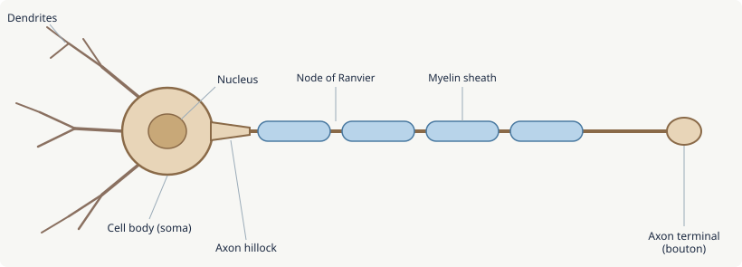
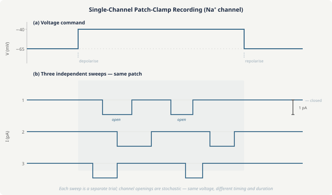

The Neuron & the Action Potential
The entire nervous system runs on a single trick: the electrical pulse. Neurons encode information as brief voltage spikes — action potentials — that travel along axons and trigger the release of chemical signals at synapses. Everything the brain does, from detecting a whisper to planning a movement to consolidating a memory, traces back to this fundamental event: an electrochemical wave that takes about one millisecond to generate, travels at speeds up to 120 m/s, and is the same shape and amplitude every time it fires. By the end of this lesson you'll understand why that pulse arises from the physics of ion gradients across a membrane, what determines whether a neuron fires at all, and how that signal travels without decaying over the length of an axon.
$V_m$ — membrane potential (mV), convention: intracellular minus extracellular
$E_X$ — equilibrium (Nernst) potential for ion $X$
$g_X$ — conductance of ion $X$ (the reciprocal of resistance)
$[X]_i$, $[X]_o$ — intracellular and extracellular concentrations of ion $X$
$F$ — Faraday's constant (96,485 C/mol); $R$ — gas constant; $T$ — temperature (K)
$z$ — valence of ion ($+1$ for Na$^+$, K$^+$; $-1$ for Cl$^-$; $+2$ for Ca$^{2+}$)
The nervous system contains two broad classes of cells: neurons, which generate and transmit electrical signals, and glia, which support, insulate, and maintain neurons.
A typical neuron has four anatomically distinct regions, each serving a distinct computational role:
- Dendrites — branching processes that receive synaptic inputs from other neurons. The dendritic tree can be vast, integrating thousands of inputs simultaneously.
- Cell body (soma) — contains the nucleus and metabolic machinery. Also the site where incoming signals are summed to determine whether the cell fires.
- Axon — the output cable. A single long process (up to 1 metre in some motor neurons) that carries the action potential away from the soma to synaptic terminals.
- Axon terminals (boutons) — the presynaptic endings that release neurotransmitter into the synapse when an action potential arrives.

Neurons come in many shapes: multipolar neurons (many dendrites, one axon) dominate the CNS; bipolar neurons appear in sensory systems (retina, olfactory epithelium); unipolar neurons carry somatosensory information from the periphery to the spinal cord.
Glia outnumber neurons roughly 1:1 in the human brain, though this ratio varies by region. Key types: astrocytes regulate the extracellular environment, buffer K$^+$ and glutamate, and form the blood-brain barrier; oligodendrocytes (CNS) and Schwann cells (PNS) wrap axons in myelin; microglia are the brain's immune cells, pruning synapses and clearing debris.
At rest, the inside of a neuron is about $-70$ mV relative to the outside — the resting membrane potential. Understanding where this comes from is the key to understanding everything that follows.
The membrane is a lipid bilayer, essentially impermeable to ions. Embedded in it are ion channels — protein pores that allow specific ions through. At rest, most of the open channels are selective for K$^+$. The cell maintains steep concentration gradients across the membrane via the Na$^+$/K$^+$-ATPase pump:
- K$^+$: high inside (140 mM), low outside (5 mM)
- Na$^+$: low inside (12 mM), high outside (145 mM)
- Cl$^-$: low inside, high outside
- Large organic anions (A$^-$): trapped inside the cell, cannot cross the membrane
The Nernst equation gives the equilibrium potential $E_X$ at which the electrical force on ion $X$ exactly balances its concentration-driven diffusion force:
At body temperature ($T = 310$ K), $RT/F \approx 26.7$ mV. For K$^+$ ($z = +1$):
K$^+$ wants to flow outward (driven by its concentration gradient), but leaving takes positive charge away from the inside, making the interior more negative. Equilibrium is reached at $-90$ mV, where the electrical attraction pulling K$^+$ back exactly cancels the concentration force pushing it out.
The resting potential ($-70$ mV) is not $E_K$ because the membrane is not only permeable to K$^+$. The Goldman-Katz equation accounts for multiple ion species weighted by their permeabilities $P_X$:
At rest, $P_K \gg P_{Na}$ (roughly 40:1), so the resting potential sits close to $E_K$ but is shifted toward $E_{Na} \approx +62$ mV by the small Na$^+$ leak. The Na$^+$/K$^+$ pump continuously corrects for this leak, expelling 3 Na$^+$ and importing 2 K$^+$ per ATP hydrolysis cycle.
The core principle: The resting potential is the weighted average of the equilibrium potentials for all permeable ions, weighted by their relative permeabilities. Change the permeability of any ion, and $V_m$ shifts toward that ion's Nernst potential.
Ion channels are transmembrane proteins with a water-filled pore at their center, selective for specific ions via the geometry and charge distribution of the pore's narrowest region (the selectivity filter). Their critical property: they are gated, meaning they switch between open and closed states in response to stimuli.
Voltage-gated channels open in response to membrane depolarization and are the key players in the action potential:
- Voltage-gated Na$^+$ channels (Na$_v$) — activate (open) rapidly on depolarization, then inactivate within ~1 ms despite continued depolarization. This inactivation is caused by a separate "ball-and-chain" inactivation gate that physically blocks the pore. The channel must repolarize fully before it can be recruited again (the refractory period).
- Voltage-gated K$^+$ channels (K$_v$) — activate more slowly than Na$_v$ and do not inactivate rapidly. Their opening drives repolarization.
- Voltage-gated Ca$^{2+}$ channels — open during depolarization; the Ca$^{2+}$ influx triggers neurotransmitter release at axon terminals.
Ligand-gated channels open in response to neurotransmitter binding — these are the postsynaptic receptors discussed in Lesson 2.
Leak channels are always open (or open/close stochastically without a stimulus trigger). Resting K$^+$ leak channels set the resting potential.
Single-channel recordings using the patch-clamp technique (Neher and Sakmann, Nobel Prize 1991) revealed that individual channels produce discrete current pulses — they are either fully open or fully closed (stochastic two-state switches). The smooth macroscopic current measured from a whole neuron is the average of thousands of such all-or-nothing events.

The action potential is a rapid, stereotyped reversal of membrane potential that propagates along the axon. Its key properties are: it is all-or-none (either fires fully or not at all), it has a fixed threshold (typically around $-55$ mV), and it is followed by a refractory period during which the cell cannot fire again.
The sequence of events, from first principles:
1. Depolarization to threshold. A synaptic input (or any other stimulus) depolarizes the membrane from $-70$ mV toward the threshold of $-55$ mV. At threshold, enough voltage-gated Na$_v$ channels have opened to produce a self-reinforcing cycle: depolarization opens more channels, which admits more Na$^+$, which further depolarizes the membrane. This is the positive feedback that makes the AP all-or-none.
2. The upstroke (depolarization). Na$_v$ channels open massively; Na$^+$ floods in, driven by both its concentration gradient and the negative interior. $V_m$ rockets from $-55$ mV to approximately $+40$ mV in under a millisecond — near (but not quite reaching) $E_{Na} = +62$ mV.
3. The peak and early repolarization. Two things now conspire to reverse the depolarization: (a) Na$_v$ channels inactivate — the inactivation gate closes, halting Na$^+$ influx even though the channel's activation gate is still open; (b) voltage-gated K$_v$ channels, which open more slowly, are now fully activated and K$^+$ flows outward, removing positive charge from the interior.
4. Repolarization. K$^+$ efflux drives $V_m$ back toward $E_K$. The Na$_v$ inactivation ensures that once the AP is underway, the upstroke cannot be re-triggered during this same cycle.
5. The undershoot (after-hyperpolarization). K$_v$ channels close slowly; the membrane transiently overshoots the resting potential toward $E_K \approx -90$ mV. During this period, the cell is in the relative refractory period — a stronger-than-normal stimulus is needed to re-fire because (a) the membrane is further from threshold, and (b) some Na$_v$ channels are still inactivated. The absolute refractory period (immediately after the AP) prevents re-firing entirely, no matter how large the stimulus.
An action potential generated at the axon hillock (the junction of soma and axon) must travel the entire length of the axon to its terminals. How does a signal that lasts 1 ms travel up to a meter without decaying?
The answer is active regeneration. The AP does not travel like a wave on a string (which decays with distance). Instead, the depolarization at each point spreads electrotonically to the adjacent membrane, brings that membrane to threshold, and triggers a fresh AP there. The original site then enters its refractory period, which prevents the AP from traveling backward. The result is a self-regenerating wave that is the same amplitude at every point along the axon.
The speed of propagation depends on two competing factors:
- Axon diameter — larger diameter means less resistance to current flow along the axon interior, so depolarization spreads faster to adjacent membrane. Propagation speed scales approximately as $\sqrt{d}$ for unmyelinated axons.
- Membrane capacitance — current must charge the membrane capacitance before depolarizing it. High capacitance slows propagation.
Myelination is evolution's solution to the speed problem. Oligodendrocytes (in the CNS) and Schwann cells (in the PNS) wrap sections of axon in multiple layers of myelin — essentially compacted cell membrane with very low capacitance and high electrical resistance. The myelin sheath is interrupted every 1–2 mm at the nodes of Ranvier, short gaps densely packed with voltage-gated Na$_v$ channels.
In a myelinated axon, the depolarizing current jumps from node to node — saltatory conduction (from Latin saltare, to jump). The signal is regenerated only at the nodes, not along the entire axon. This is vastly more energy-efficient (fewer Na$^+$ ions need to be pumped back) and enormously faster: unmyelinated C fibres conduct at 0.5–2 m/s, while the largest myelinated Aα fibres (muscle afferents) conduct at up to 120 m/s.
The functional importance of myelin is starkly illustrated by multiple sclerosis, a demyelinating disease where the immune system destroys myelin sheaths. Loss of myelin slows and eventually blocks conduction, producing the progressive sensory and motor deficits characteristic of the disease.
Using $RT/F = 26.7$ mV at $T = 310$ K and $z = +1$:
$$E_{Na} = 26.7\,\text{mV} \cdot \ln\frac{145}{12} = 26.7 \times 2.49 \approx +66\,\text{mV}$$Na⁺ has a strong drive to enter the cell — both the chemical gradient (high outside, low inside) and the electrical gradient (negative interior) push it inward. The membrane only needs to depolarize to $+66$ mV before the two forces exactly balance.
Two reasons. First, Na$_v$ channels begin to inactivate even as they are opening — by the time $V_m$ approaches $+40$ mV, inactivation is already reducing Na$^+$ conductance. Second, the voltage-gated K$^+$ channels are also opening, and K$^+$ efflux acts to pull the membrane back toward $E_K$. The peak $V_m$ reflects a race between the decaying Na$^+$ current and the rising K$^+$ current. The membrane reaches whatever voltage balances these two competing currents at their instantaneous values — and at the time of the peak, that happens to be around $+40$ mV.
At $t=0.5$ ms, the AP is still in its upstroke or early repolarization phase. Na$_v$ channels are inactivated — even fully open, they cannot pass current, so no amount of additional depolarizing stimulus can generate a new AP. This is the absolute refractory period.
By $t=3$ ms (typically during or just after the undershoot), Na$_v$ channels have recovered from inactivation — their inactivation gate has reset. However, the membrane is still hyperpolarized (near $-80$ mV during the undershoot), so a larger depolarization is required to reach threshold. The voltage-gated K$^+$ channels may still be partially open. A sufficiently strong stimulus can overcome both obstacles. This is the relative refractory period.
- The action potential is all-or-none, yet neurons encode graded information. How does a neuron represent the intensity of a stimulus when its outputs are identical pulses?
Rate coding: stronger stimuli produce higher firing rates (more APs per second). The neuron converts a graded receptor potential into a train of all-or-none spikes, with frequency proportional to input intensity. This is the classic view — though temporal coding (precise spike timing) may carry additional information in some systems.
- The Na⁺/K⁺-ATPase pump is essential for maintaining ion gradients. It consumes roughly 40% of the brain's ATP. Yet if you poisoned the pump, the neuron could still fire many thousands of action potentials before the gradients collapsed enough to matter. Why? And what does that imply about the energetics of the AP itself?
Each AP moves only a tiny fraction of the total ion gradient — roughly 1 in 10⁶ K⁺ ions crosses per AP. The capacitance of the membrane is small ($\sim$1 µF/cm²), so only a small charge displacement is needed to change $V_m$ by 100 mV. The pump's role is maintenance over long timescales, not immediate AP support. This implies that the AP itself is energetically cheap; most of the brain's ATP goes to maintaining the resting potential continuously, not to firing.
- MS destroys myelin and slows conduction. But which aspects of function would be disrupted first — fast reflexes, sensory perception, or complex cognition — and why?
Fast reflexes require rapid conduction in large-diameter myelinated axons (motor and proprioceptive). These would fail first as myelin is damaged. Sensory perception via slow C fibres is already unmyelinated, so less affected. Complex cognition relies on distributed cortical circuits with relatively short connection distances — it might be surprisingly resilient initially, degrading gradually as cortico-cortical white matter tracts demyelinate.
- Thinking the AP is "made of" Na⁺ and K⁺ flowing in bulk. Very few ions actually cross the membrane per AP (roughly 1 in a million). It's a charge redistribution — a small movement of ions across a highly insulating membrane generates a large voltage change, exactly because of the membrane's low capacitance.
- Confusing the Nernst potential with the resting potential. $E_K = -90$ mV is the potential at which K⁺ is in equilibrium; the resting potential ($-70$ mV) is the actual steady state, set by the weighted average of all permeable ions. They differ because the membrane is also slightly permeable to Na⁺.
- Thinking the undershoot requires "extra" K⁺ efflux. The undershoot (after-hyperpolarization) results from K⁺ channels that close slowly. While they remain open after $V_m$ has returned to $-70$ mV, they continue to pull $V_m$ toward $E_K = -90$ mV. No extra K⁺ is needed — the existing K⁺ conductance is simply slow to turn off.
- Conflating absolute and relative refractory periods mechanistically. Absolute refractory = Na$_v$ channels physically inactivated (can't open). Relative refractory = Na$_v$ channels recovered but membrane hyperpolarized + residual K⁺ conductance. Different mechanisms, different timescales.
Synaptic Transmission (Lesson 2) — the AP arriving at an axon terminal opens voltage-gated Ca²⁺ channels; Ca²⁺ entry triggers vesicle fusion and neurotransmitter release. Everything in the rest of the course depends on the AP reliably reaching its destination.
Bioelectricity — the Hodgkin-Huxley equations model Na$_v$ and K$_v$ conductances as variable resistors whose values depend on voltage and time. The four coupled ODEs reproduce the AP quantitatively and are the foundation of computational neuroscience. The cable equation (Rall model) extends this to dendrites with realistic geometry.
Motor Systems (Lesson 6) — the speed of the corticospinal tract's AP (up to 70 m/s in myelinated Aα fibres) sets the latency between a motor command and muscle contraction, relevant for fine motor control and reaction time.